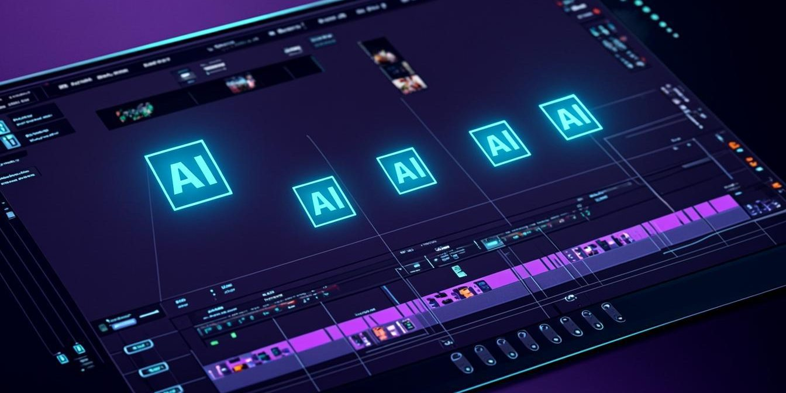

SEO, AEO e Presenca Digital
Como monetizar canais no YouTube e TikTok usando CapCut e ferramentas de IA
A monetização de canais no YouTube e TikTok exige uma combinação estratégica de conteúdo de alto valor e eficiência na produção. Usando CapCut e ferramentas de IA, você pode criar vídeos curtos de alta qualidade em escala, otimizar para algoritmos e transformar visualizações em receita consistente.

O mercado de conteúdo digital está mais competitivo do que nunca, mas também oferece oportunidades sem precedentes para quem domina as ferramentas certas. Na minha trajetoria de 27 anos fundando startups e entregando mais de 1.200 projetos digitais, percebi que a diferença entre criadores que apenas publicam e aqueles que realmente monetizam está na capacidade de produzir conteúdo relevante de forma rápida e escalável. Este artigo mostra exatamente como CapCut e inteligência artificial podem revolucionar sua estratégia de monetização em plataformas como YouTube e TikTok.
Estratégia de monetização para plataformas de vídeo curto
A monetização no YouTube e TikTok não é apenas sobre habilitar anúncios. É sobre criar um ecossistema de conteúdo que gera múltiplas fontes de receita. O YouTube oferece o Partner Program, memberships, Super Chat e produtos de marca, enquanto o TikTok tem o fundo criativo, parcerias de marca e programas de afiliados. A chave está em entender como cada plataforma valoriza o conteúdo e adaptar sua estratégia de produção para maximizar essas oportunidades.
Infoprodutores e criadores que dominam essas plataformas não focam apenas em um tipo de conteúdo. Eles criam um mix estratégico de vídeos curtos para engajamento, vídeos médios para educação e vídeos longos para conversão. Essa abordagem diversificada permite capturar diferentes estágios do funil de marketing e monetizar de formas variadas, desde anúncios até vendas diretas de produtos digitais. Na minha mentoria, vemos alunos aplicando essa estratégia com resultados mensuráveis em poucas semanas.
Este artigo acompanha o conteúdo da trilha de Presença Digital da mentoria, onde cada um desses conceitos vira plano de execução aplicado no seu negócio real.
- diversificação de receitas: Combinar anúncios, afiliados, produtos próprios e serviços para não depender de uma única fonte de renda
- segmentação de audiência: Criar diferentes tipos de conteúdo para atrair diferentes perfis de público com diferentes poderes de compra
- otimização para algoritmo: Entender os fatores de ranqueamento de cada plataforma para aumentar organicamente o alcance e monetização
- consistência estratégica: Publicar conteúdo regularmente mantendo qualidade e alinhamento com a marca pessoal ou do produto
CapCut otimizado para monetização
O CapCut transcendeu sua função básica de editor de vídeos para se tornar uma ferramenta estratégica para criadores que buscam monetização. Su funcionalidades de edição automática, templates virais e integração com IA permitem produzir conteúdo profissional em fração do tempo que levaria com softwares tradicionais. Essa eficiência não apenas reduz custos de produção, mas também aumenta a capacidade de criar mais conteúdo e testar diferentes abordagens monetárias.
Para maximizar o potencial do CapCut em sua estratégia de monetização, é essencial dominar recursos como o texto em movimento inteligente, que aumenta o engajamento e o tempo de visualização, e os templates virais, que replicam formatos comprovados de sucesso. A ferramenta também oferece recursos de otimização para SEO de vídeos, como legendas automáticas e hashtags sugeridas, elementos cruciais para aumentar o alcance orgânico e, consequentemente, as oportunidades de monetização. Criadores que usam essas funcionalidades de forma estratégica veem um aumento significativo em suas métricas de engajamento.
Além disso, o CapCut permite a criação de séries de conteúdo de forma rápida, com recursos de marcação de capítulos e criação de playlists integradas ao editor. Essa funcionalidade é particularmente útil para criar conteúdo em formato de curso ou tutorial, que pode ser monetizado diretamente através do YouTube ou como lead magnet para produtos digitais. A capacidade de exportar em múltiplos formatos otimizados para cada plataforma também economiza tempo na hora de adaptar o mesmo conteúdo para diferentes canais.
Roteirização automatizada com IA
A roteirização é um dos gargalos mais críticos na produção de conteúdo em escala. Ferramentas de IA podem agora gerar roteiros otimizados para diferentes formatos e plataformas em segundos, usando prompts específicos que consideram o algoritmo de cada rede. Essa automação não apenas acelera o processo criativo, mas também garante que cada vídeo seja estruturado para maximizar o engajamento e as conversões, elementos fundamentais para a monetização.
Para implementar a roteirização automatizada, comece definindo os tópicos principais do seu nicho e os formatos de vídeo que funcionam melhor para monetização. Use ferramentas de geração de prompts para criar roteiros estruturados com gancho, desenvolvimento e call-to-action claros. A chave é refinar os resultados iniciais da IA com sua expertise de nicho, mantendo a autenticidade enquanto aproveita a eficiência da automação. Essa abordagem permite produzir dezenas de roteiros consistentes sem sacrificar a qualidade ou o alinhamento com sua marca.
Prompt de IA para roteiro de monetização: "Crie um roteiro de 30 segundos para TikTok sobre [tópico] com gancho emocional, 3 pontos principais e CTA para produto digital, usando hashtags relevantes do nicho"
Produção em escala para conteúdo de alto valor
Produzir conteúdo em escala não significa sacrificar qualidade. Pelo contrário, trata-se de criar sistemas que permitam manter padrões elevados enquanto aumenta a quantidade de conteúdo. Usando CapCut e ferramentas de IA, você pode criar modelos de produção que transformam ideias em vídeos publicáveis em minutos, não horas. Essa eficiência é o que separa criadores que apenas sobrevivem daqueles que prosperam no mercado digital.
O primeiro passo para a produção em escala é criar um sistema de conteúdo que inclua planejamento, produção, otimização e análise. Use planilhas ou ferramentas de gestão para organizar suas ideias, scripts e prazos. Automatize tarefas repetitivas como legendas, thumbnails e hashtags usando as ferramentas certas. Finalmente, estabeleça um fluxo de trabalho onde cada etapa se conecta perfeitamente, permitindo que você produza conteúdo consistentemente sem sobrecarga. Na minha mentoria, ajudo alunos a implementar esses sistemas específicos para seus nichos de atuação.
| Recurso | CapCut | Ferramentas de IA | Benefício para Monetização |
|---|---|---|---|
| Edição Automática | Template virais | Geração de roteiros | Redução de tempo de produção |
| Otimização | Legendas automáticas | Análise de tendências | Maior alcance orgânico |
| Personalização | Texto em movimento | Customização de prompts | Maior engajamento e conversão |
| Integração | Exportação direta | Sincronização com calendários | Consistência na publicação |
Otimização para algoritmos e SEO de vídeo
Cada plataforma tem seus próprios critérios para ranquear conteúdo, e entender esses algoritmos é fundamental para a monetização. O YouTube prioriza tempo de visualização, engajamento e retenção, enquanto o TikTok valoriza completos, interações iniciais e tendências. Usando CapCut e ferramentas de IA, você pode otimizar seus vídeos especificamente para esses critérios, aumentando organicamente seu alcance e suas oportunidades de monetização.
Para otimização no YouTube, foque em criar miniaturas cativantes, títulos com palavras-chave e vídeos que mantenham o espectador assistindo por mais tempo. Use o CapCut para criar pontos de interesse visual nos primeiros 15 segundos, crucial para a retenção. No TikTok, priorize os primeiros 3 segundos com conteúdo impactante, use hashtags estratégicas e crie vídeos completos que encorajem assistidas. Ferramentas de IA podem analisar tendências e sugerir os melhores tempos para publicar, além de otimizar legendas e descrições com palavras-chave relevantes do seu nicho.
Uma técnica avançada é usar o CapCut para criar versões otimizadas do mesmo vídeo para cada plataforma. Por exemplo, um vídeo de 5 minutos pode ser editado para versões de 60 segundos para TikTok, 2 minutos para Shorts e 5 minutos completo para o YouTube, mantendo a mensagem central mas adaptando o formato para o algoritmo de cada rede. Essa abordagem multiplica seu alcance sem precisar criar conteúdo do zero para cada plataforma, economizando tempo e aumentando sua capacidade de monetização.
Monetização múltipla e estratégia de conteúdo
Os criadores mais bem-sucedidos não dependem de uma única fonte de receita. Eles desenvolvem estratégias de monetização múltipla que incluem anúncios, afiliados, produtos próprios e serviços. Usando CapCut e IA, você pode criar diferentes tipos de conteúdo para cada uma dessas fontes, otimizando cada vídeo para sua função específica no seu ecossistema de monetização.
Para implementar a monetização múltipla, comece mapeando as diferentes fontes de receita disponíveis para seu nicho. Crie um conteúdo principal que estabeleça sua autoridade, conteúdo secundário para engajamento e conteúdo promocional para conversões. Use CapCut para adaptar rapidamente o mesmo conteúdo para diferentes formatos e plataformas, economizando tempo mantendo a consistência da marca. Ferramentas de IA podem ajudar a identificar produtos e serviços alinhados com seu público, sugerindo oportunidades de afiliados ou criação de produtos próprios baseados nas perguntas e necessidades mais comuns do seu público.
Quer acelerar sua monetização com mentoria direta? Converse com nossa equipe. Na mentoria de Presença Digital, eu aplico isso no seu negócio real, presencial em Ribeirão Preto e São Paulo ou online.
Quero mentoria de Presença DigitalPassos práticos para implementar sua estratégia
Transformar essa estratégia em resultados requer uma abordagem estruturada e consistente. Comece por auditar seu conteúdo existente, identificando o que está funcionando e o que pode ser otimizado para melhor monetização. Defina metas claras para cada plataforma e tipo de conteúdo, estabelecendo KPIs específicos como taxa de cliques, conversões e receita por vídeo. Essa base de dados orientará suas decisões de produção e otimização.
O próximo passo é implementar um sistema de produção que integre CapCut e ferramentas de IA em seu fluxo de trabalho diário. Crie modelos para diferentes tipos de conteúdo, automatize tarefas repetitivas e estabeleça um calendário de publicação consistente. Monitore seus resultados rigorosamente, ajustando sua estratégia com base nos dados. Lembre-se que a monetização é um processo contínuo de teste e otimização. Na minha mentoria, ajudo alunos a implementar exatamente esse sistema personalizado para seus nichos específicos, acelerando significativamente os resultados.
Seu próximo passo para dominar a monetização
Aplicar essas estratégicas requer conhecimento técnico e orientação personalizada para seu nicho específico. A jornada de monetização de canais envolve não apenas dominar ferramentas como CapCut e IA, mas entender como combinar diferentes formatos de conteúdo para criar um ecossistema de receita sustentável. Se você está pronto para transformar sua presença digital em uma fonte de renda consistente e escalável, o próximo passo é buscar uma orientação especializada que acelere seu progresso.
Na trilha Presença Digital, eu estruturei um método completo que integra exatamente essas estratégias de produção em escala e monetização para criadores e infoprodutores. Essa abordagem prática já ajudou centenas de alunos a transformarem seus canais em fontes de receita consistentes. Se você quer implementar essa estratégica com a orientação direta de quem já entregou mais de 1.200 projetos digitais e mentorou centenas de criadores, acesse a página da trilha Presença Digital e conheça o método que está revolucionando a monetização de conteúdo no Brasil.
Perguntas frequentes (FAQ)
Como o CapCut ajuda na monetização de vídeos?
O CapCut acelera a produção de conteúdo profissional, permitindo criar mais vídeos em menos tempo. Seus templates virais e recursos de otimização para algoritmos aumentam o alcance orgânico, diretamente impactando suas oportunidades de monetização.
Quais ferramentas de IA uso para roteirização?
Ferramentas como ChatGPT, Claude e Jasper podem gerar roteiros otimizados para diferentes formatos. O segredo é criar prompts específicos para seu nicho e refinar os resultados com sua expertise.
É possível monetizar apenas com vídeos curtos?
Sim, é possível através de parcerias de marca, afiliados e produtos digitais. No entanto, uma estratégia combinada com vídeos médios e longos tende a gerar receita mais diversificada e sustentável.
Quanto tempo leva para ver resultados de monetização?
Resultados significativos geralmente aparecem entre 3 a 6 meses de consistência. O tempo varia conforme seu nicho, estratégia e capacidade de produção de conteúdo de alto valor.
Preciso de equipamentos caros para produzir com CapCut?
Não. O CapCut funciona bem em smartphones e computadores básicos. A qualidade do conteúdo depende mais da sua estratégia e roteiro do que do equipamento usado.